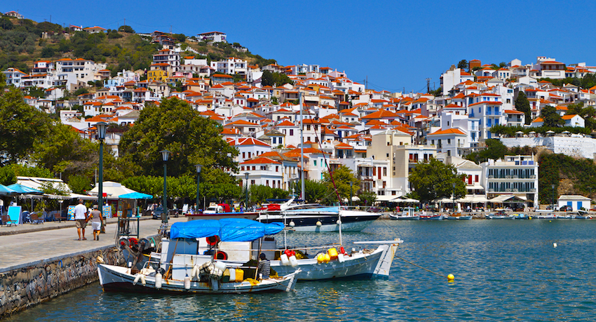

ΣΠΟΡΑΔΕΣ
Αρχική|
Σκιάθος |
Σκόπελος|
Αλόννησος |
Σκύρος|

Σκόπελος
Είναι το δεύτερο σε μέγεθος νησί των Σποράδων και ανήκει στο Νομό Μαγνησίας.
Ονομάζεται και νησί του δάσους γιατί είναι το πιο πράσινο νησί στην Ελλάδα. Το έδαφος
της στο μεγαλύτερο μέρος του καλύπτεται από πανέμορφα πευκοδάση που καταλήγουν σε
όμορφες παραλίες και όρμους.
Η χώρα της Σκοπέλου διατηρεί νησιώτικο χαρακτήρα με
στενά πλακόστρωτα δρομάκια και γραφικά λευκά σπίτια. Μεγαλύτερα χωριά είναι η
Γλώσσα, το Κλήμα και ο ‘Εληος. Από τη Γλώσσα μπορεί κανείς να δει τη Σκιάθο και
το Πήλιο.
Στην αρχαιότητα το νησί ονομάζονταν Πεπάρηθος, από τον γιο του Διόνυσου
και της Αριάδνης. Πρώτος κάτοικος του νησιού ήταν ο άλλος γιος του Διόνυσου Στάφυλος.